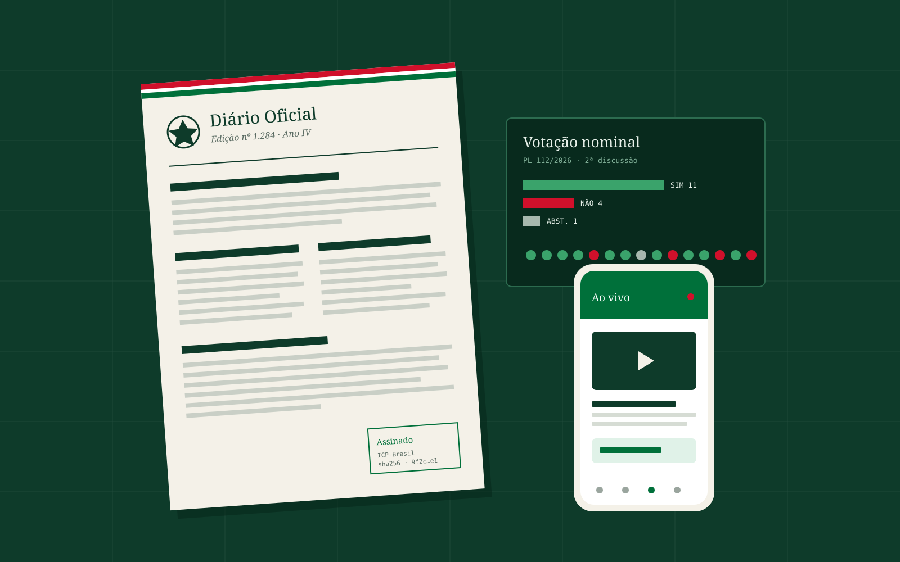
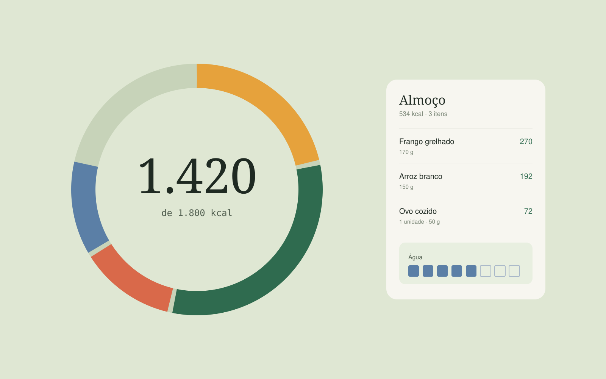

Dávisson Falcão
PortfólioPortfolio · 2026
Faço sistemas web de ponta a ponta — da API em C# e .NET à tela em Angular, React ou Next.js. De dia na ELogica; fora dela, construo produtos inteiros. I build web systems end to end — from the C# and .NET API to the Angular, React or Next.js screen. By day at ELogica; after hours, whole products of my own.
RoleScrollCoisas que dáThings you can pra medir.measure.
Tempo de deploy depois de levar o build para Docker e automatizar a cópia de arquivos entre servidores via SMB.
Deploy time after moving the build into Docker and automating file transfer between servers over SMB.
ELogicaDocumentos por operação, com download em chunks e o progresso acompanhado por polling na tela.
Documents per operation, using chunked downloads with progress tracked on screen via polling.
ELogicaPáginas no front web da Plataforma Pública — portal, painel, plenário e console —, além do app em Expo.
Pages in the Plataforma Pública web front end — portal, admin, plenary and console — plus the Expo app.
Next.js 16 · 133 commitsVerificações automáticas na API do Diário, rodando contra um Postgres de verdade compilado em WebAssembly.
Automated checks on the Diário API, running against a real Postgres compiled to WebAssembly.
Diário · PGliteQuatro produtos,Four products, do banco ao deploy.database to deploy.
-
01
Plataforma Pública
Front web e mobile de uma plataforma para órgãos públicos: Diário Oficial, transparência, e-SIC e plenário com votação ao vivo. Web and mobile front end for a public-sector platform: official gazette, transparency, FOI requests and live plenary voting. Next.js 16 · Expo · Tailwind 4
2026 ↗
-
02
Olheiro de Preço
SaaS para quem vende no Mercado Livre: painel de vendas e aviso no Telegram quando um concorrente baixa o preço. SaaS for Mercado Livre sellers: a sales dashboard and a Telegram alert when a competitor drops their price. Next.js · Supabase · Cloudflare Workers
2026 ↗
-
03
Imoboo CRM
CRM imobiliário com atendimento por WhatsApp assistido por IA — e um backend feito para chamar a IA o mínimo possível. Real-estate CRM with AI-assisted WhatsApp support — and a backend built to call the AI as little as possible. .NET · Angular · Claude API · Redis
2026 ↗
-
04
Diário
App de alimentação, água e hábitos que se instala no celular. Front e API no mesmo deploy, custo zero. Food, water and habit tracker that installs on your phone. Front end and API in one deploy, zero cost. React · Express · Postgres · PWA
2026 ↗
Gosto de software que aguenta o mundo real: muita gente acessando ao mesmo tempo, sistema antigo que não pode parar, regra de negócio que ninguém escreveu. I like software that survives the real world: lots of people at once, old systems that can't go down, business rules nobody ever wrote down.
Comecei em 2024 como freelancer, fazendo sites e sistemas de gestão para pequenos negócios. Era eu do levantamento de requisitos até o deploy e a hospedagem.
I started freelancing in 2024, building websites and management systems for small businesses. It was me from gathering requirements to deployment and hosting.
Em janeiro de 2025 entrei na ELogica como estagiário e, em abril, fui efetivado como desenvolvedor full-stack. Trabalho com Angular 18, C# e .NET 8 em aplicações corporativas, com sistema novo e legado lado a lado.
In January 2025 I joined ELogica as an intern and was hired as a full-stack developer that April. I work with Angular 18, C# and .NET 8 on enterprise applications, new and legacy systems side by side.
Fora do expediente construo produtos completos, do banco ao deploy. É onde experimento com Next.js, Supabase, Cloudflare, Expo e IA aplicada.
After hours I build complete products, database to deploy. That's where I experiment with Next.js, Supabase, Cloudflare, Expo and applied AI.
Curso Sistemas de Informação na UNIASSELVI e falo inglês em nível B2.
I'm studying Information Systems at UNIASSELVI and speak English at a B2 level.
- HojeNowDesenvolvedor full-stack na ELogicaFull-stack developer at ELogica
- FormaçãoEducationBacharelado em Sistemas de Informação — UNIASSELVI, previsão 2028B.Sc. in Information Systems — UNIASSELVI, expected 2028
- IdiomasLanguagesPortuguês (nativo) · Inglês (B2)Portuguese (native) · English (B2)
- CursosCoursesAlura — C# orientado a objetos, SQL Server avançado, Angular avançado · Danki Code — Front-end, React, Vue.js, ScrumAlura — Object-oriented C#, advanced SQL Server, advanced Angular · Danki Code — Front-end, React, Vue.js, Scrum
-
Abr 2025 — hojeApr 2025 — now
Desenvolvedor Full-StackFull-Stack Developer
ELogica- Deploy de cerca de 40 minutos para menos de 3, migrando o build para Docker e automatizando a transferência de arquivos entre servidores via SMB.
- Download de documentos em chunks: de 10 para 125 documentos por operação, com indicador de progresso via polling.
- Processamento automatizado de documentos e geração de PDF em aplicações corporativas.
- Componentes reutilizáveis e padrões de arquitetura em Angular 18; APIs REST em C# e .NET 8 com SQL Server; integração com serviços externos.
- Monitoramento com Grafana e Prometheus, modernização de sistemas legados, Scrum e Kanban.
- Cut deploys from about 40 minutes to under 3 by moving the build into Docker and automating file transfer between servers over SMB.
- Chunked document downloads: from 10 to 125 documents per operation, with a polling-based progress indicator.
- Automated document processing and PDF generation for enterprise applications.
- Reusable components and architecture patterns in Angular 18; REST APIs in C# and .NET 8 with SQL Server; external service integrations.
- Monitoring with Grafana and Prometheus, legacy modernization, Scrum and Kanban.
-
Jan — Abr 2025Jan — Apr 2025
Estagiário de DesenvolvimentoSoftware Development Intern
ELogica- Refatoração de código legado para arquiteturas modernas em .NET e Angular.
- Funcionalidades de ponta a ponta com C#, TypeScript e SQL, aplicando SOLID.
- Refactored legacy code into modern .NET and Angular architectures.
- Built end-to-end features with C#, TypeScript and SQL, applying SOLID.
-
Jun 2024 — Jan 2025Jun 2024 — Jan 2025
Desenvolvedor FreelancerFreelance Developer
RemotoRemote- Aplicações web responsivas e sistemas de gestão para pequenas e médias empresas.
- React, Vue.js, Node.js, MongoDB e SQL — do levantamento de requisitos ao deploy e à hospedagem, direto com o cliente.
- Responsive web apps and management systems for small and mid-sized businesses.
- React, Vue.js, Node.js, MongoDB and SQL — from requirements to deployment and hosting, working directly with clients.
LinguagensLanguages
- C#
- TypeScript
- JavaScript
- SQL
- HTML
- CSS / SASS
Front-end
- Angular
- React
- Next.js
- Vue.js
- Tailwind CSS
- React Native · Expo
Back-end
- .NET 8
- EF Core
- APIs REST
- Node.js · Express
- SOLID
DadosData
- SQL Server
- PostgreSQL
- Supabase
- Redis
- MongoDB
Infra
- Docker
- CI/CD
- Azure DevOps
- Git
- Vercel
- Cloudflare Workers
Observ. e IAObserv. & AI
- Grafana
- Prometheus
- Claude API
- Gemini API
Uso no dia a dia na ELogicaUsed daily at ELogica
| ProjetoProject | O que éWhat it is | Stack | |
|---|---|---|---|
| Quilombo Sertão do Moxotó | Site de projeto de pesquisa do CNPq sobre patrimônio quilombola e direitos territoriais.Website for a CNPq research project on quilombola heritage and land rights. | Em produçãoLive | Site ↗ |
| KiQuiz | Quiz gerado por IA a partir de qualquer tema.AI-generated quiz on any topic. | React · Gemini | Demo ↗CódigoCode ↗ |
| HR System | Sistema de gestão de RH full-stack.Full-stack HR management system. | .NET | CódigoCode ↗ |
| Courses API | API REST para gestão de cursos.REST API for course management. | .NET · REST | CódigoCode ↗ |
| AnimeFind | Busca de animes consumindo a Jikan API.Anime search on top of the Jikan API. | JavaScript · Jikan | Demo ↗CódigoCode ↗ |
| Income Tracker | Controle de finanças pessoais.Personal finance tracker. | Vue.js | Demo ↗CódigoCode ↗ |
| HotDog Simulator | Sistema de lanchonete com CRUD de pedidos.Snack bar system with order CRUD. | Vue.js | VídeoVideo ↗CódigoCode ↗ |
| Memory Game | Jogo da memória com tema de One Piece.One Piece–themed memory game. | JavaScript | Demo ↗CódigoCode ↗ |
| Todo List | Gerenciador de tarefas.Task manager. | Vue.js | Demo ↗CódigoCode ↗ |